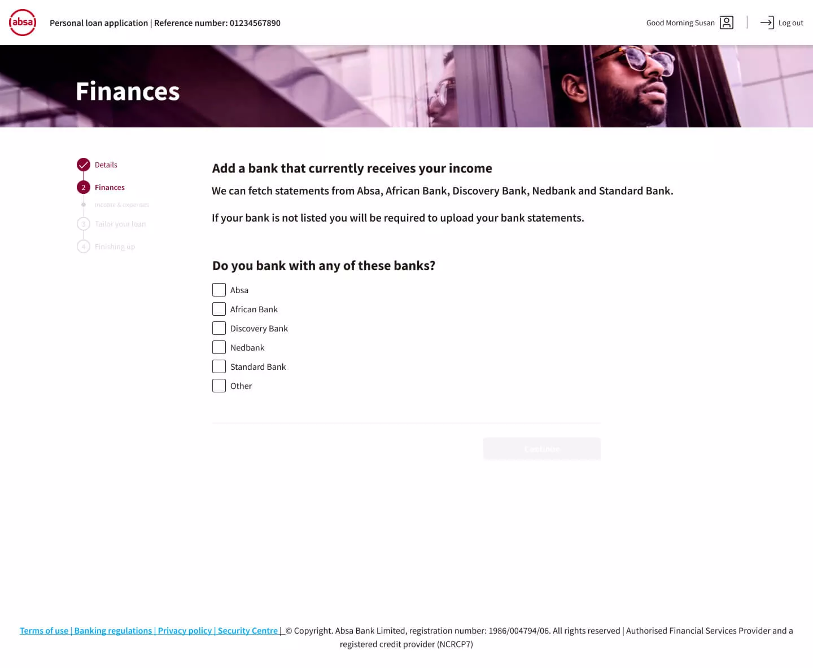

Restoring Flow
in Credit Applications
Overview
Income verification had become one of the largest barriers to digital credit onboarding at Absa. Across Personal Loans, Credit Cards, and Overdraft applications, customers frequently encountered delays, manual reviews, and repeated document submissions before receiving a credit decision.
What should have been a seamless digital experience often broke down at the point of verification, resulting in customer frustration, increased operational effort, and reduced conversion.
Working alongside process engineering, business analysis, and architecture teams, I led the experience strategy and service design effort to rethink how income verification operated within the credit journey.
Rather than treating verification as a document-upload challenge, we reframed it as a broader service and systems problem involving customer behaviour, operational processes, compliance requirements, and technology constraints.
The result was a redesigned verification model that reduced customer effort, improved automation, and supported Absa's strategic goal of increasing Straight-Through Processing (STP).
Hitting the Verification Wall
Manual uploads. Long waits. Back-office reviews.
Absa’s digital credit journey was meant to be seamless, but income verification became the biggest bottleneck across Personal Loans, Credit Cards, and Overdrafts, affecting 40–60% of applications.
The result? Abandoned applications, higher operational effort, frustrated customers, and lower conversion.

We set out to eliminate the delays plaguing the journey. Our mission was to enable customers to move from application to approval without the “manual black hole.” The premise was simple: Apply online. Get approved. Continue banking.
Shaping the outcome beyond the interface
As Lead Designer, my role extended beyond interface design.
I was responsible for:
Leading experience strategy for income verification.
End-to-end customer and operational journey mapping.
Facilitating cross-functional workshops.
Aligning business, compliance, operational and technology stakeholders.
Defining future-state service and experience models.
Driving usability validation and design decision-making.
I worked closely with a Process Engineer, Business Analyst, and Solution Architect to ensure the solution balanced customer needs, operational realities, and technical feasibility.

Where the System Failed
To understand the challenge, we conducted a multi-channel audit across digital, voice, and branch experiences.
What emerged was a clear pattern: income verification was not failing because customers couldn't upload documents. It was failing because the system placed too much responsibility on customers while providing too little support in return.
High Input Variability
Customers submitted documents in different formats, qualities, and structures. Many submissions were incomplete or unsuitable for automated processing.
System Interpretation Failures
Verification technologies and validation rules struggled to consistently interpret uploaded information, resulting in failed verifications and unnecessary referrals.
Delayed Feedback
Errors were often identified after submission, creating lengthy delays before customers understood what had gone wrong.
No Predictable Recovery Path
When verification failed, customers were frequently required to restart steps, resubmit documentation, or seek assistance through support channels.
This created a recurring failure loop:
Submit → Validation Failure → Delayed Feedback → Resubmission
A process that increased customer effort while simultaneously increasing operational workload.
Key Research Insights
Through stakeholder interviews, journey analysis, operational reviews, and usability testing, three critical insights emerged:
Insight 1
Customers were often unsure which documents were acceptable and how they should be submitted.
Design Response
Provide clearer guidance, examples, and contextual support throughout the verification process.
Insight 2
The journey felt unpredictable, with customers unsure of what would happen next or how far they were from completion.
Design Response
Create a structured verification experience with clear progress indicators and predictable outcomes.
Insight 3
Errors were discovered too late, making correction time-consuming and frustrating.
Design Response
Introduce earlier validation and proactive feedback mechanisms to prevent errors before submission.

The Strategic Reframe
The original initiative focused on improving document uploads. Research revealed a larger opportunity.
Instead of asking: How do we improve uploads?
We asked: How do we help customers successfully complete verification with minimal effort and minimal manual intervention?
This shift fundamentally changed the direction of the project. Rather than optimising a single interaction, we focused on redesigning the verification system itself.
Strategy
To restore Straight-Through Processing, we established five design principles:
Customers should not be responsible for providing information that can be sourced or validated through trusted systems.
Verification should happen automatically wherever possible.
Regulatory and audit requirements remained non-negotiable.
Customers should remain within a single end-to-end experience.
Not every application could be automated. The experience needed intelligent fallback paths for exceptions and edge cases.
Defining the Strategy
Solution
We introduced a hybrid verification model that combined automation, intelligent validation, and guided customer support.
Rather than relying solely on document uploads, the experience leveraged multiple verification mechanisms to reduce friction while maintaining compliance requirements.
Income information could be verified through integrated data sources and automated verification services, reducing the need for manual document handling.
OCR and verification technologies extracted and validated information automatically, reducing data entry effort and improving accuracy.
Where automation was not possible, customers received structured guidance, document examples, and contextual assistance to support successful completion.
Issues were identified earlier in the journey, allowing customers to correct problems before submission.
Verification became an integrated part of the credit application experience rather than a disconnected process requiring additional intervention.
The result was a more resilient verification model capable of supporting both automated and manual scenarios without disrupting the customer journey.
Testing & Refinement
Validation & Iteration
The redesigned experience was validated through moderated usability testing and stakeholder reviews.
Testing Focus
What We Learned
These findings informed further refinements to language, guidance, and document examples before implementation.
Results
Impact
Reduced effort. Greater confidence. Fewer interruptions.
Improved understanding of requirements throughout the application process — with far fewer referrals and manual interventions.
Less manual work. Fewer resubmissions. Better throughput.
Reduced dependency on back-office verification, lower support volumes, and meaningfully improved processing efficiency.
Higher completion. Faster decisions. Scalable onboarding.
Increased STP capability and faster credit decisioning across digital channels — building a foundation for scalable onboarding.
Defining the Strategy
Impact & Outcomes
The redesigned experience transformed income verification into a seamless, integrated part of the credit journey — improving both user experience and operational efficiency.
- Reduced effort during verification.
- Improved understanding of requirements.
- Increased confidence throughout the application process.
- Fewer interruptions and referrals.
- Reduced dependency on manual verification activities.
- Fewer repeat submissions.
- Lower support and referral volumes.
- Improved processing efficiency.
- Improved application completion rates.
- Increased Straight-Through Processing capability.
- Faster credit decisioning.
- Greater scalability of digital onboarding channels.
By embedding verification into the core journey, the experience reduced friction, improved conversion, and enabled more efficient credit decisioning.
Reflection
This project reinforced an important lesson that continues to shape my approach to service design and experience strategy:
Many customer experience problems are not interface problems.?
The initial brief focused on improving document uploads, but the real challenge existed across people, processes, technology, and policy.
By reframing income verification as a systems problem rather than a screen problem, we were able to improve customer outcomes, operational efficiency, and business performance simultaneously.
The most meaningful design work happened not in the interface itself, but in aligning the system around the experience.